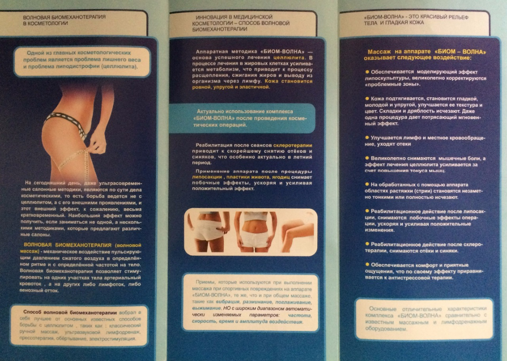
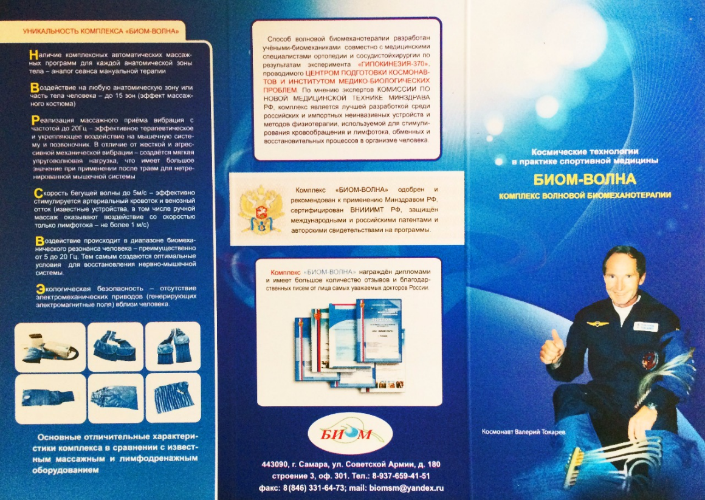
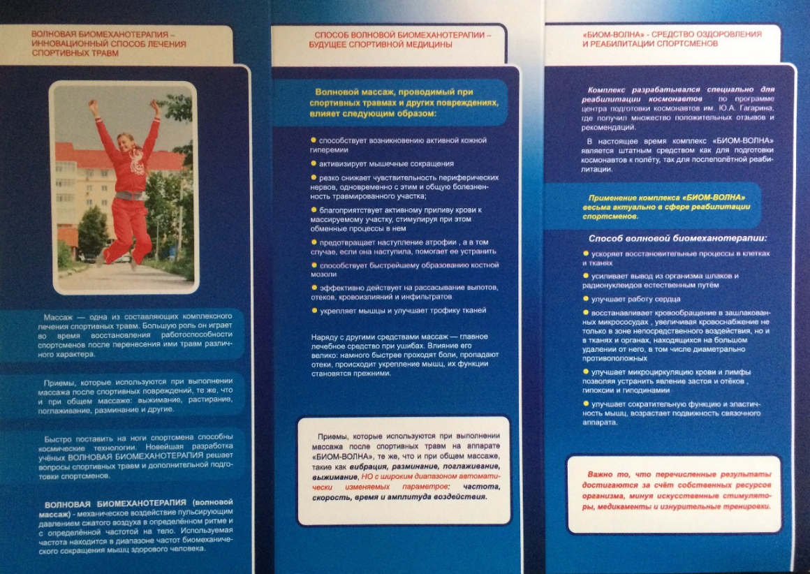

Возрастные ограничения
От 10 лет и до запрета врачей на массажные процедуры
Улучшает подвижность связочного аппарата, сократительную функцию и эластичность мышц. Ускоряет восстановительные процессы в клетках и тканях.
«БИОМ-ВОЛНА» — автоматизированный биомеханический аппаратный комплекс, предназначенный проводить виброволновой пневмопрессинг, или более точно, волновую биомеханотерапию мышечной системы человека, с целью принудительного стимулирования кровообращения, лимфотока и улучшения внутримышечной гемодинамики, в условиях полной автоматизации процедуры. Волновая биомеханотерапия проводится по типу уединенной бегущей волны. Отличительной особенностью комплекса является использование в качестве силы воздействия сжатого воздуха, подаваемого на систему эластичных камер при помощи портативного копресораи уникальной системы быстродействующих электронных пневмоклапанов.
С применением комплекса «БИОМ-ВОЛНА» реализуется принципиально новый подход в лечении и профилактике заболеваний опорно-двигательного аппарата, микрососудистых и сердечно-сосудичтых заболеваний, проведении реабилитационных мероприятий. Волновой массаж способствует улучшению реологических свойств крови, обмена веществ и трофики тканей, усилению регенерации клеток, купирует болевой синдром, значительно ускоряет восстановительный процесс в клетках и увеличивает периферийное кровообращение в организме.
Комплекс клинически испытан в крупнейших клиниках и медицинских институтах Москвы и Самары. Его эффективность единодушно подтверждают медицинские специалисты Центра подготовки космонавтов, Московского клинического института им. Владимирского, Центра медицины труда АвтоВАЗа, хоккейной команды «Металлург». Комплекс «БИОМ-ВОЛНА» одобрен и рекомендован Минздравом РФ к применению в физиотерапии. По мнению экспертов комитета новой медицинской техники Минздрава РФ комплекс Биом-Волна является лучшей разработкой среди известных российских и импортных неивазивных методов и устройств физиотерапии для принудительного стимулирования кровообращения, лимфотока и обменных процессов в организме человека.
Комплекс и способ волновой биомеханотерапии защищен международными и российскими авторскими свидетельствами и патентами.
Принцип действия основан на преобразовании пульсации электрического напряжения в пульсацию сжатого воздуха, нагнетаемого с помощью компрессора в систему эластичных камер — пневмоманжету, что создает направленные колебательные движения поверхности пневмоманжет в виде уединенной упругой бегущей волны. Параметры бегущей волны — скорость, частота, амплитуда, имеют широкий диапазон автоматических изменений, который зависит от выбранной программы волновой биомеханотерапии и режима воздействия. Подача воздуха регулируется уникальной системой быстродействующих электронных пневмоклапанов и автоматической программой. С помощью разнообразных массажных манжет возможно провести стимуляцию практически любой зоны или части тела — плечо и предплечье, бедро или голень (как совместно, так и спарено), стопы, область спины полностью или локально поясничную и воротниковую зону, живот.
Если у вас нет противопоказаний к обычному массажу (не более 3 часов в день)
Комплекс применяется в медицине, в спорте, для восстановления и реабилитации людей с ограниченными возможностями, в быту.
Благодаря конструкции манжет Вы можете использовать «Биом-Волна»:
Применяется в воде, совместим с водными процедурами. Повышает эффективность применения мазей, гелей. Комплекс прост в управлении, не требует специальной подготовки медицинского персонала, мобилен при перемещении.
По мнению экспертов комиссии по новой медицинской технике Минздрава РФ, комплекс является лучшей разработкой среди российских и импортных неинвазивных устройств и методов физиотерапии, используемый для стимулирования кровообращения и лимфотока, обменных и восстановительных процессов в организме человека.
  Блок управления, компрессор, манжеты
Одинарные и спаренные для конечностей: спина, рука, бедро-голень, голень-стопа, воротниковая зона, ступни, живот
До 0,2 Атм (0- 150 mmHg), 0,2МПа Частота следования циклов сжатия/разрежения воздуха в камерах манжет, в диапазоне, Гц от 0,01 до 5
10-200 л/мин (зависит от компрессора)
220В±10%; 50Гц, +24В,+12В. Мощность блока управления не более 40 Вт, компрессора не более 120Вт
5кг
360×180×130
Комплекс прост в управлении, не требует медперсонала, мобилен при перемещении. Размещается в сумке, время приведения в действие 3 минуты
Масажные процедуры начинаются как в классическом общем массаже — от периферии к центру, в обыденной речи «снизу-вверх». То есть движения волны в манжетах начинаются от стопы, голени к тазовой области, от кисти к плечу, от поясницы к шейному отделу. Исключение составляет манжета для живота — круговые движения происходят по часовой стрелке.
Для упрощения подключения — колодки пневморукавов манжет и блока управления имеют сбоку синие метки — они должны совпасть при подключении. Картинка (колодка-замок??) (см. стр.11 Методического руководства)
На каждой манжете есть лейбл (Картинка) при правильном положении манжеты лейбл находиться наверху
Процедуры проводят на голое тело или на тело должна быть одета легкая одежда из тонкой ткани. В любом случае, для соблюдения гигиенических норм и увеличения срока службы манжет, между телом и манжетой должна быть проложена одноразовая салфетка. Манжеты должны располагаться на теле комфортно, не жать, не давить.
Стандартный набор манжет
Представляет собой единую манжету. Движение волны в манжете начинается от поясницы к основанию шеи. Режим работы на панели блока управления.
Крайняя верхняя камера манжеты должна подходить к переходу шейного отдела позвоночника в грудной. Верх манжеты противоположен тому краю манжеты где начинается пневморукав (на нижнем крае манжеты наклеен лейбл). В обыденной речи — крайняя верхняя камера манжеты находится на одном уровне с плечами. Под поясницу подкладывается валик (при необходимости). Поверхность, на которую кладется манжета, должна быть жесткой (кушетка, кровать, пол).
Проводить процедуры можно на любой конфигурации стульев, кресел, диванов. Для более эффективного применения желательно чтобы стул, кресло были с высокими спинами и без зазоров между сиденьем и спинкой. Расположение манжеты ограничивается высотой спинки стула или кресла. Между телом и манжетой должна быть проложена одноразовая салфетка, либо простынь.
В некоторых фитнес-клубах манжету для спины кладут на шар (фитбол — fitball) и укладываются на неё спиной или животом.
Состоит из двух частей: малой манжеты для стопы и большой для голени. Движение волны в манжете начинается от стопы к голени. Режим работы на панели блока управления.
Используется как для левой, так и для правой ноги. Пятка находится в промежутке между малой и большой манжетами. Сначала застегивают малую манжету для стопы, затем большую для голени. Основные положения — лёжа, сидя. Если проводить массаж сидя на стуле, то для удобства можно положить массируемую ногу на другой стул, так чтобы она была параллельно полу. Если манжета для голени покрывает всю голень и находит на коленную чашечку, расслабьте её так, чтобы манжета не давила на лимфатический узел под коленной чашечкой. Между телом и манжетами должна быть проложена одноразовая салфетка, либо простынь.
Состоит из двух частей: малой манжеты для голени и большой для бедра.Движение волны в манжете начинается от голени к бедру. Режим работы на панели блока управления.
Используется как для левой, так и для правой ноги. Сначала застегивают малую манжету на голени, затем большую на бедре. Основные положения — лёжа, сидя. Если проводить массаж сидя на стуле, то для удобства можно положить массируемую ногу на другой стул, так чтобы она была параллельно полу. Между телом и манжетами должна быть проложена одноразовая салфетка, либо простынь.
Изготовляется вариант спаренных манжет, сразу на две ноги (по заказу).
Представляет собой единую манжету. Движение волны в манжете начинается от кисти к плечу. Режимы работы на панели блока управления.
Имеет две позиции: кисть- предплечье и предплечье-плечо. Используется как для левой, так и для правой руки. Основные положения — лёжа, сидя. Если проводить массаж сидя на стуле,то для удобства необходимо положить массируемую руку на стол и занять позицию чтобы руке было комфортно. На руке среднего человека манжета оборачивается почти два раза. Это сделано для возможности вкладывания деревянных или металлические пластин между складками манжеты (для лечения растяжений, ушибов, для более жёсткого воздействия на кисть и мыщцы руки). Между телом и манжетой должна быть проложена одноразовая салфетка, либо простынь.
Изготовляется вариант спаренных манжет, сразу на две руки (по заказу).
Представляет собой единую манжету. Движение волны в манжете в позиции «стопа» начинается от пятки к пальцам. Движение волны в манжете в позиции «воротниковая зона» начинается от основания шеи к голове. Режимы работы на панели блока управления Расположение в позиции «стопа». Основные положения — стоя, сидя.
Основные положения — лёжа, полулёжа. В позиции полулёжа массаж осуществляют на кресле или диване при условии что манжету можно плотно приложить к спинке кресла или дивана. Между телом и манжетой должна быть проложена одноразовая салфетка, либо простынь.
Представляет собой единую манжету. Круговые движения волны в манжете происходят по часовой стрелке. Манжету обертывают вокруг тела таким образом, чтобы камеры располагались на животе. Манжету можно перемещать в верхнюю и нижнюю части живота. Отмечены положительные результаты при использовании манжеты на поясничной зоне (при этом её необходимо повернуть вокруг тела). Между телом и манжетой должна быть проложена одноразовая салфетка, либо простынь.
От 10 лет и до запрета врачей на массажные процедуры